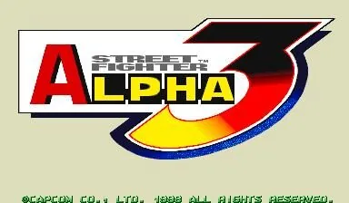

FBA (FinalBurn Alpha)
Street Fighter Alpha 3
- Año: 1998
- Desarrollador: Capcom
- Género: Lucha / Uno contra uno
- Jugadores: 2 jugadores
Controles
arriba Y X L = puñetazo flojo, medio y fuerte; abajo B A R = patada floja, media y fuerte. Mirar también el J2.
Disposición de Street Fighter: puños arriba, patadas abajo.
| Panel | Juego |
|---|---|
 | Dar una patada floja |
 | Dar una patada media |
 | Dar una patada fuerte |
 | Dar un puñetazo flojo |
 | Dar un puñetazo medio |
 | Dar un puñetazo fuerte |
  | Empezar |
 | Meter una moneda |
+  | Salir del juego |
El panel en FBA (FinalBurn Alpha)

Argumento
Recopilado de internet (2026-11-03). Lo marcado con ⚠️ no está probado en la bartop.
Pasa dos años después de Street Fighter Alpha 2. Varios luchadores siguen un camino que les lleva hasta M. Bison y su arma definitiva, el Psycho Drive.
Cada personaje tiene su historia, rivales en el quinto y el noveno combate, un combate final contra M. Bison y su propio final. Vuelven los dieciocho de Alpha 2 y se suman Cammy, E. Honda, Blanka, Vega, Balrog (oculto), R. Mika (luchadora japonesa admiradora de Zangief), Karin Kanzuki (rival de Sakura), Cody (de Final Fight, ahora un preso fugado) y las Muñecas de Shadaloo Juli y Juni (ocultas), asesinas con el cerebro lavado.
Final: en varios finales los héroes asaltan la base de Shadaloo y destruyen el Psycho Drive, y el cuerpo de Bison estalla. Su alma sobrevive y posee a Rose, mientras los científicos de Shadaloo le preparan un cuerpo nuevo.
Fuentes
Jugabilidad
Recopilado de internet (2026-11-03). Lo marcado con ⚠️ no está probado en la bartop.
- Tipo de juego: lucha uno contra uno de Capcom (1998), con tres puñetazos y tres patadas. En Japón, Street Fighter Zero 3.
- Estilos («ismos»): se elige uno tras el personaje:
- A-ism: como los Alpha anteriores, barra de tres niveles y varios Super Combos. El nivel del Super Combo depende de la fuerza del botón (medio = nivel 2).
- X-ism: como Super Street Fighter II Turbo: un solo Super Combo, muy fuerte. Más ataque y menos defensa; no se puede bloquear en el aire ni hacer Alpha Counter.
- V-ism: sin Super Combos, pero con Custom Combos, que se activan con un puñetazo y una patada de la misma fuerza.
- Barra de guardia: baja al bloquear; si se vacía, quedas indefenso un momento y la barra se acorta.
- Agarrar: ahora con dos puñetazos o dos patadas a la vez.
- Modo de un jugador: rivales en el quinto y el noveno combate, y M. Bison al final.
Botones según las guías (⚠️ por confirmar)
| Recreativa | Panel | Acción |
|---|---|---|
| Dos puñetazos o dos patadas a la vez | Por ejemplo, Y + X o B + A | Agarrar y lanzar |
| Puñetazo y patada de la misma fuerza (V-ism) | Y + B · X + A · L + R | Empezar un Custom Combo |
Fuentes
Guía de niveles
Recopilado de internet (2026-11-03). Lo marcado con ⚠️ no está probado en la bartop.
Son 10 combates: rivales al azar, con un rival propio del personaje en el quinto y el noveno, y M. Bison al final.
- Ejemplo: en el vídeo de «Vídeos», el jugador se enfrenta a Blanka, Dan, Sakura, Cody, Rose, Vega, Sagat, Karin, Ken y M. Bison.
- Modos ocultos: el vídeo sigue con el modo de supervivencia (ver «Trucos y secretos»).
Fuentes
Objetos
Recopilado de internet (2026-11-03). Lo marcado con ⚠️ no está probado en la bartop.
No hay objetos: es un juego de lucha.
Fuentes
Trucos y secretos
Recopilado de internet (2026-11-03). Lo marcado con ⚠️ no está probado en la bartop.
En los códigos, Start es 1P. Puñetazos: Y flojo, X medio, L fuerte; patadas: B floja, A media, R fuerte. Ninguno usa Coin, así que no chocan con los atajos de la bartop.
Truco: modos ocultos (⚠️ sin probar)
Meter la moneda, mantener los botones y pulsar 1P. Se pueden soltar al llegar a la pantalla de elegir personaje.
| Modo | Qué cambia | Panel |
|---|---|---|
| Clásico | Sin Super Combos, pero no te pueden lanzar por el aire | Mantener L + R y pulsar 1P |
| Mazi | ⚠️ Las fuentes no lo explican | Mantener X + A y pulsar 1P |
| Saikyou | ⚠️ Las fuentes no lo explican | Mantener Y + B y pulsar 1P |
| Dramático | 2 contra 1 durante 6 asaltos, con un compañero de la máquina u otro jugador | Mantener B + A + R y pulsar 1P (mantenerlos un momento al elegir personaje) |
| Supervivencia | Contra los 27 personajes a un asalto; la vida pasa de un combate a otro y no se puede continuar | Mantener Y + X + L y pulsar 1P (mantenerlos al elegir personaje) |
| Combate final | Solo contra el Bison final: si ganas, ves tu final | Tras elegir el estilo, mantener 1P + Y + A + L |
Truco: personajes ocultos (⚠️ sin probar)
Pasar cinco segundos con el cursor en Karin y luego ir a una casilla de personaje al azar (están ocultas: las del jugador 1, encima de Dan y debajo de Zangief):
- Balrog: mantener 1P y pulsar cualquier botón.
- Juli: en la casilla de arriba, mantener ↑ y pulsar un botón; en la de abajo, ↓.
- Juni: en una casilla de la izquierda, mantener ← y pulsar un botón; en una de la derecha, →.
⚠️ Según StrategyWiki, en la recreativa estos secretos se desbloquean con el tiempo de uso de la máquina: el color de la pantalla de título dice cuáles hay (de crema, sin nada, a azul claro, con todo). También se pueden abrir con códigos en el menú de servicio. Sin comprobar en qué estado está la de la bartop.
Fuentes
Longplay

Partida completa de la recreativa (40 min), con el modo supervivencia, de World of Longplays: Arcade Longplay [164] Street Fighter Alpha 3.
Pulsa el minuto de un nivel para ver el vídeo desde ese punto.